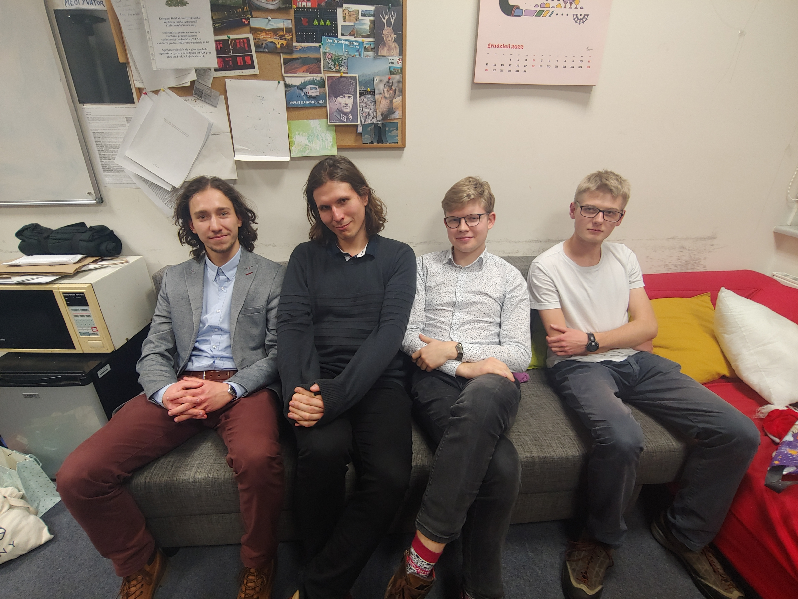

KMPSUJ
Kontakt
Wydział Fizyki, Astronomii i
Informatyki Stosowanej UJ
Pokój H-1-0-3
Serwer discord
Fanpage KMPSUJ
Grupa członkowska
Github

Uśmiechnięci kołowicze, Wigilia 2022
autorka: Ksymena Poradzisz
Nasze koło powstało w 1998 roku, a od tamtego czasu zrzesza studentów wszystkich kierunków Międzywydziałowych Studiów Matematyczno-Przyrodniczych. Po wielu przejściach i migracjach wylądowaliśmy w pokoju H-1-0-3 na Wydziale Fizyki, Astronomii i Informatyki Stosowanej UJ, gdzie można nas spotkać do dziś.
Cechą od zawsze wyróżniającą nasze koło jest jego interdyscyplinarność; w przeciwieństwie do większości tego typu organizacji studenckich, w H-1-0-3 spotkać można zarówno matematyków jak i informatyków, chemików, fizyków, biologów i geologów. Ta mnogość zainteresowań, choć czasem wprowadzająca lekkie zamieszanie, pozwala jednak na poszerzenie swojej wiedzy i ciekawości z dziedzin zupełnie odmiennych od studiowanej. Nasi kołowicze wygłaszają referaty równie różnorodne jak oni sami, a podczas dni naleśnika, dni pizzy, poseminaryjnych wyjść na piwo czy organizowanych kilka razy do roku wyjazdach w góry można się także poznać mniej akademicko, a bardziej koleżeńsko.
Dołączyć do koła można w dowolnym momencie od pierwszego dnia studiów, wystarczy odezwać się w dowolnym z podanych mediów lub skontaktować bezpośrednio ze skarbnikiem.

Od lewej: Aleksander Lenart (zast. prezesa), Jakub Firlej (prezes), Igor Piechowiak (skarbnik), Bartosz Żbik (zast. skarbnika)
autorka: Ksymena Poradzisz
Coroczna Interdyscyplinarna Studencka Konferencja „SeMPowisko” jest wydarzeniem o zasięgu (co najmniej) ogólnopolskim, organizowanym przez nasze Koło. Głównym celem konferencji jest spotkanie studentów różnych nauk ścisłych i przyrodniczych oraz utworzenie przestrzeni do interdyscyplinarnej dyskusji. Podczas konferencji posługujemy się językiem angielskim, co umożliwia lepsze przygotowanie na konferencje międzynarodowe oraz podszlifowanie swoich umiejętności językowych.

autorka: Ksymena Poradzisz
Organizowane przez Członków Koła seminaria służą do dzielenia się tematami, niszowymi zagadnieniami i ciekawostkami, których nie sposób znaleźć w sylabusach przedmiotów. Prócz możliwości wysłuchania barwnego referatu o tematyce z jednej z wielu dziedzin naukowych studiowanych przez Kołowiczów, spotkanie po godzinach zajęć w sali seminaryjnej pozwala poznać lepiej kolegów i koleżanki oraz uzyskać wgląd w to, co ich interesuje. Po wysłuchanym wykładzie proces poznawczy sempów jest najczęściej kontynuowany z tej mniej naukowej strony, w barze T.E.A Time.

autorka: Ksymena Poradzisz
Mimo, że nauka i studia w życiu sempów zajmują większą część życia (minimalnie 81 000 min, czyli 60 ECTS-ów na rok), zawsze znajdzie się trochę czasu na spotkanie w bezpiecznej przystani pokoju H-1-03 na WFAIS. Można tam znaleźć kolegę, który pomoże w zdaniu przedmiotu, pudełko pizzy (z zawartością lub gdy szczęście nie dopisze bez), a w szczególnych przypadkach włączoną naleśnikarkę, przy której sam Prezes może przygotować strudzonym studentom ciepły obiad w postaci pysznego naleśnika.

autorka: Ksymena Poradzisz
Poza wydarzeniami na krakowskim kampusie, jeśli dopisze czas i pogoda, kilka razy do roku wybieramy się na kilkudniowe wyjazdy w góry (dalej nazywane szkołami). Szkoły to wyjątkowe wydarzenia, podczas których poznajemy się, trochę wędrujemy (choć zawsze z uwzględnieniem i tych większych, i mnniejszych zapaleńców), podczas obowiązkowej sesji referatowej dzielimy się swoimi zainteresowaniami (nie zawsze naukowymi!), słowem- miło spędzamy czas.

autorka: Martyna Koprowska